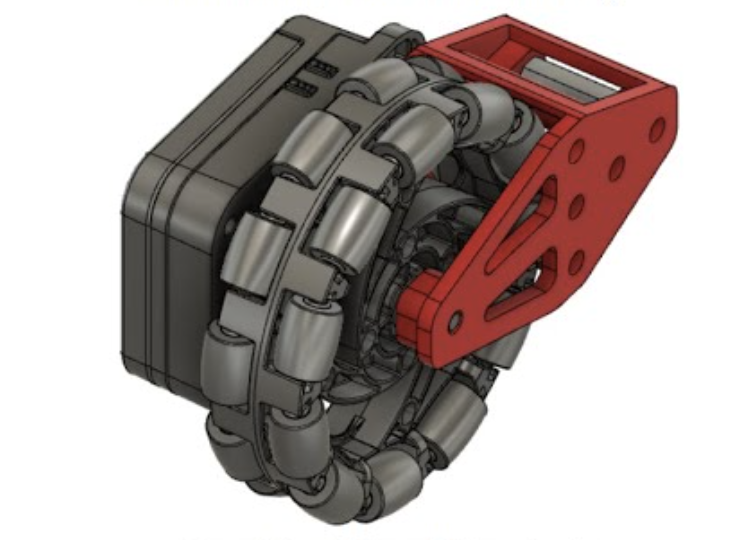
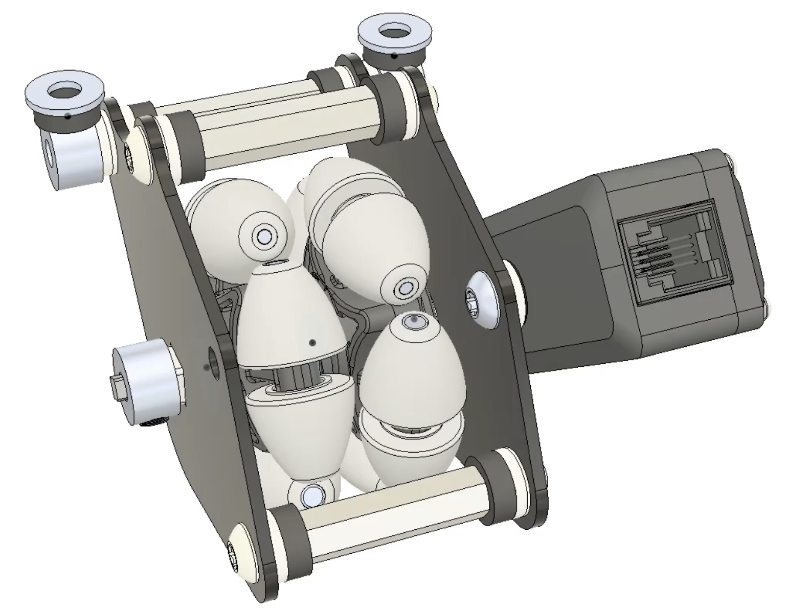
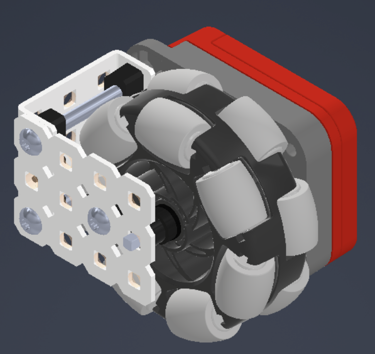
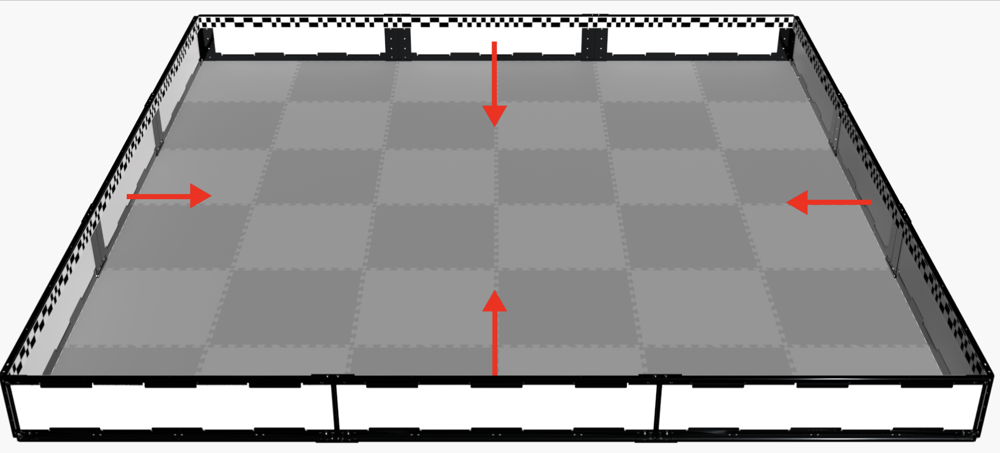
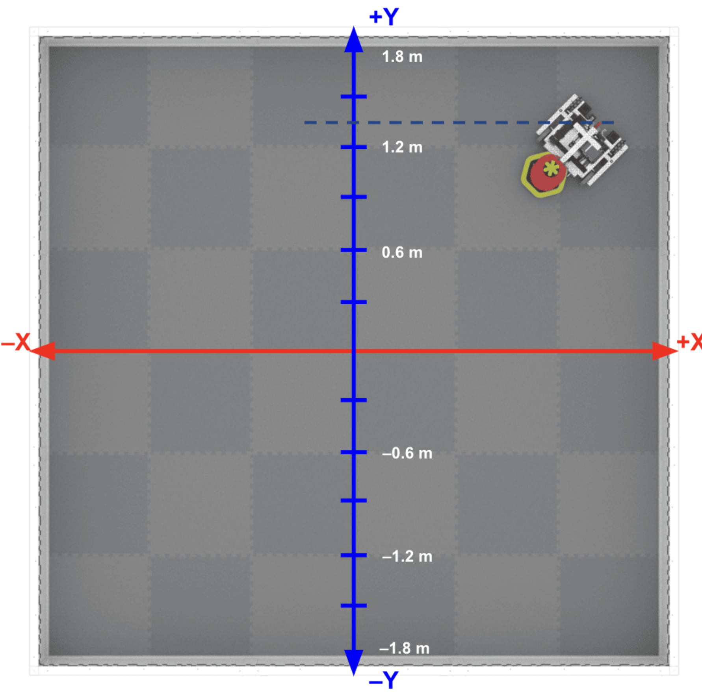
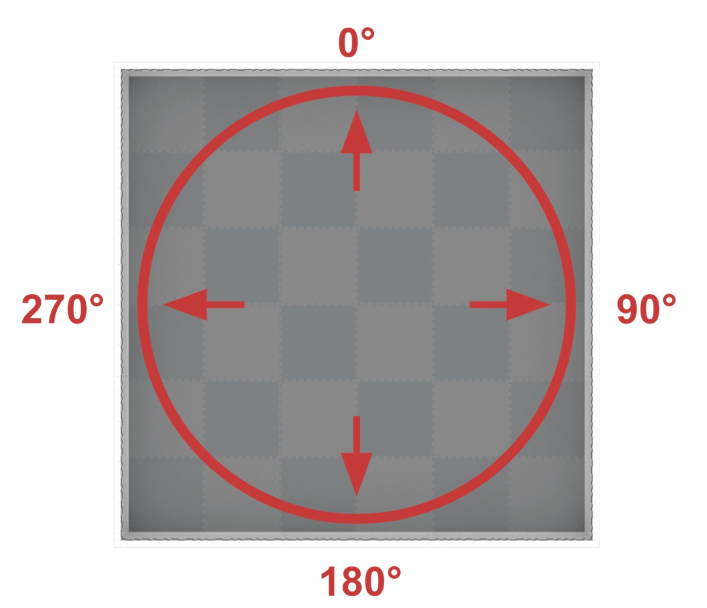
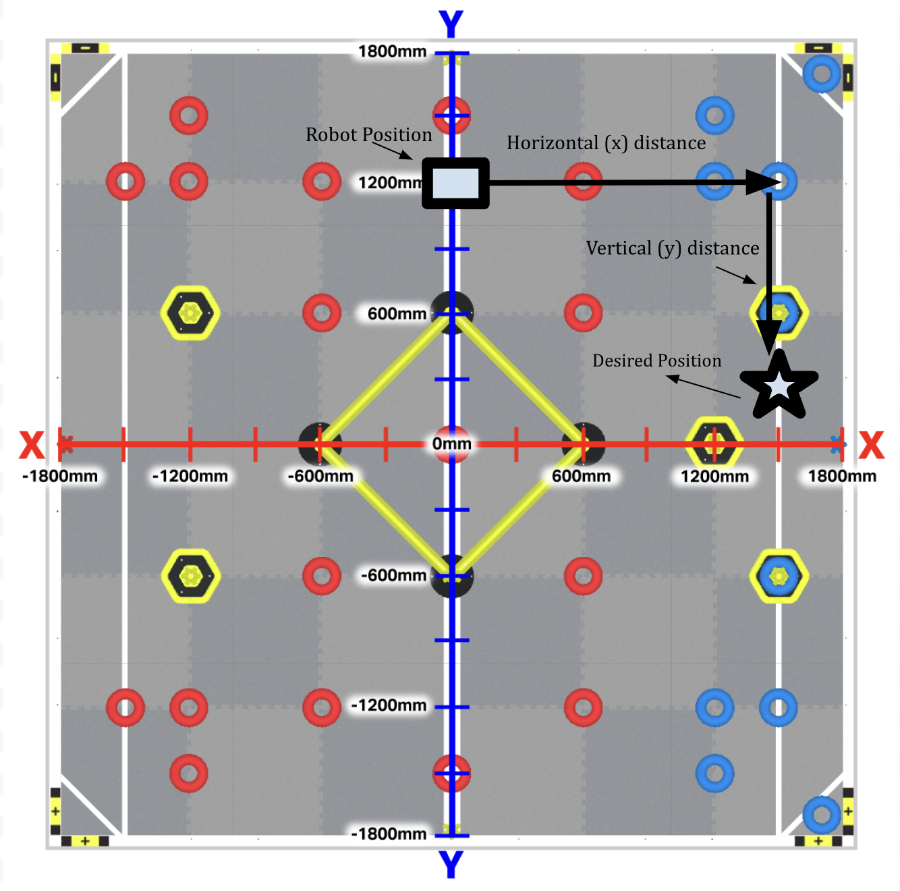
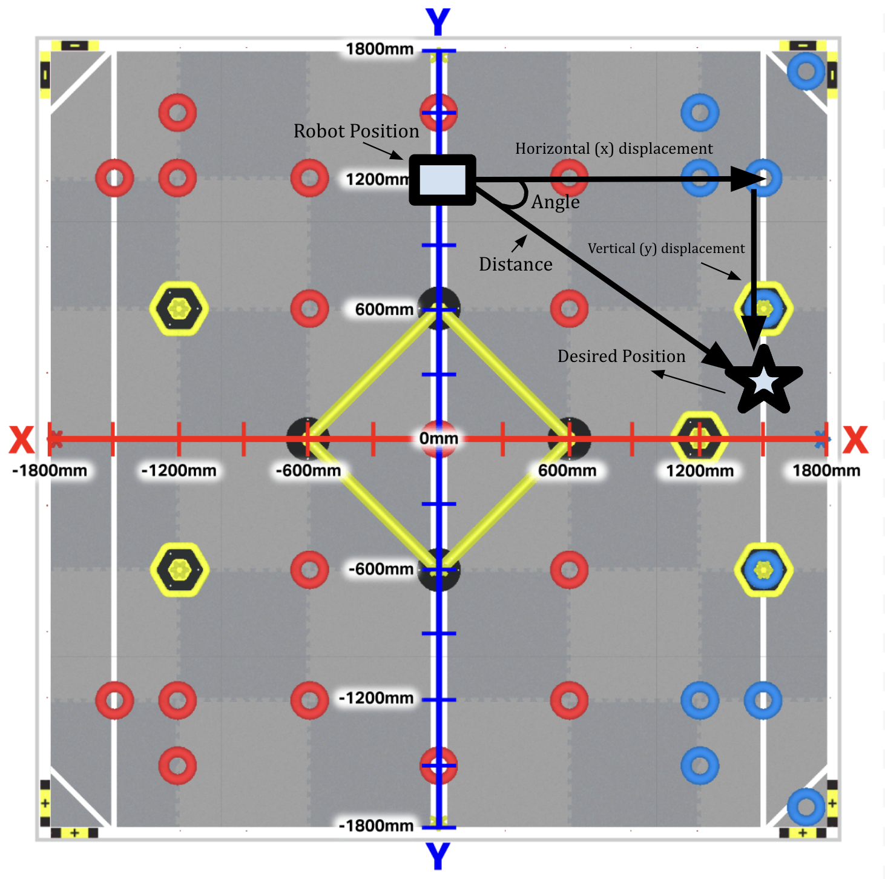

Absolute Positioning System
November 2024
Objective
In competitive robotics, the autonomous section, where robots must use precoded directions of every match/run, plays a very important role in the tournament's outcome. In matches, this section allows your alliance to have a head start because it lets you start driver control with points already scored for your team and sometimes even an additional bonus from winning the autonomous section. On the other hand, during skills runs, where you spend one minute either driving or in autonomous aiming to score as many points as possible, the autonomous skills section acts as a tiebreaker between different overall skills scores and can contribute to your overall global ranking. Because of the importance that the robot's autonomous driving has on our success in tournaments and the overall season, accuracy during this section becomes a key priority.
Problem
With a good code, accuracy during these routines seems like an easy aim. However, things during a match and on the field rarely go as planned: a game object might topple over in the robot's path, the robot might hit a wall, or another robot might get in its way. Because of all these outside interferences, the robot often ends up moving a fraction of an inch off target. During the 15-second autonomous periods, this slight error is often manageable and oftentimes doesn't go over the tolerance that our routine can handle. However, during the one-minute autonomous routines, these small errors tend to accumulate over time, leading the robot to end up inches off target. This error poses an extreme issue especially in games requiring high accuracy like High Stakes, where even an inch off can lead to incorrect clamping of the mobile stakes, preventing the robot from scoring rings and even occasionally causing it to jam. For example, during our autonomous skills routine after scoring the rings on the front side of the field, the robot tries to cross over to the back side of the field. But whenever trying to do so, because of accumulated error, the robot often ends up in an unexpected position and is therefore unable to clamp the goal.
Our Approach
To fix this issue, we needed to find a way so that our robot could reorient and reposition itself through code. To do this, the robot must first be able to locate itself on the field, or in other words, use an absolute positioning system.
What is an Absolute Positioning System?
An Absolute Positioning System is a system that allows you to determine your position relative to a fixed reference point. In robotics, the APS keeps track of the exact position of the robot on the field, including Cartesian coordinates, and the orientation of the robot during a game autonomous or programming skills run.
Absolute Positioning vs. Relative Positioning
A Relative Positioning System allows the robot to locate where it is in relation to its last movement. With a relative positioning system, the robot travels or turns with respect to itself (for example, turn 90 degrees, or drive forward 12 inches). However, with an absolute positioning system, the robot travels to a certain area with respect to the field (for example, turn to heading 90 degrees).
Brainstorm Solutions
Examples of Absolute Positioning Systems (in VEX robotics)
- Odometry (Solution #1)
Odometry uses a set of odometry or “dead” wheels (free-spinning wheels with rotation sensors) in order to track the distance the robot has moved. Using a tracking algorithm, we can use these distances to determine exactly where on the field the robot is positioned.
Examples of Odometery Wheel Pods: - Distance Sensor (Solution #2)
This sensor measures the distance to an object, approximate object size, and the speed at which you are approaching it. This can be used to figure out the distance from the field perimeter, which can be used to locate where on the field the robot is. - GPS Sensor (Solution #3)
This sensor uses the GPS field strips (which are mandatory for all skills fields) to locate exactly where on the field the robot is as well as the heading (direction) the robot is facing.




Select a Solution
Solution Options
- Solution #1 - Odometry
This solution would not suit our robot well because it is a complex code that takes months of tuning to give the desirable accuracy for our robot. However, due to time constraints and not enough time until the tournament, we decided not to do this solution, as without the necessary tuning, it may be inaccurate and become a hindrance for our autonomous. - Solution #2 - Distance Sensor
Our plan for this solution was to use the distance sensor to detect the walls of the field to determine where the robot is on the field. However, through research and testing, we discovered that the distance sensor's measurement range is meant for short distances (20 mm to 2,000 mm / 0.79 inches to 78.74 inches), and above this distance the accuracy is approximately 5%. However, when we want to detect the robot's position on the field, the robot is often far away from the walls, which leads to inaccurate measurements. - Solution #3 - GPS Sensor
This solution is the simplest to implement, as we only need to implement the sensor and program it to detect the location of the robot. We tested the accuracy of our robot by placing it on various parts of the field, where it would detect the location of the robot and print the heading it needs to face and the distance it needs to travel. Through our testing, this solution proved to be very accurate and the most suitable solution for our robot.
| Solution | Pros | Cons |
|---|---|---|
| Odometry | Most accurate | Difficult to tune and code (takes months); without proper tuning it can be inaccurate |
| Distance Sensor | Extremely accurate when in range; simple to implement | Extremely inaccurate out of range; has very small range; doesn't work with our use cases because we often need the center when the robot is closer to midfield |
| GPS Sensor | Simple to implement; quite accurate | Depends heavily on field and lighting conditions; not as accurate as odometry |
Final Decision: Our team decided to implement a GPS sensor because it is the most accurate and reliable option for our robot that could be implemented within our time constraints.
Implement the Absolute Positioning Algorithm
Before creating the algorithm, we first needed to create a system such that we can map every point on the field onto a 2D coordinate system (Cartesian coordinates) such that each and every point has an x (horizontal) coordinate and a y (vertical) coordinate. Following that, we created a heading system (similar to polar coordinates) where every direction the robot is pointing towards has a corresponding angle.


Algorithm
- The robot should detect where it is on the field using the GPS sensor.
- The robot should calculate the horizontal and vertical displacement between the robot and the target.
- The robot should calculate the distance it needs to travel and the angle it needs to turn to reach the desired location.
- The robot should turn to the correct heading and then travel the distance needed to reach the correct location.

Heading = $\tan^{-1}\left(\frac{y}{x}\right)$
Distance = $\sqrt{x^2+y^2}$

Our Code
void goTo(float xDestination, float yDestination, bool dir)
{
////////////////////////////////////////////////////////////////////////////////*
variables (takes input from the computer)
xDestination = the x position of the destination
yDestination = the y position of the destination
dir = direction the robot should travel (true-forwards and false-backwards)
*/////////////////////////////////////////////////////////////////////////////////
/* STEP 1 */
// calculates the location of the robot on the field
float xStart = GPS.xPosition(inches); // xStart = the x position of the robot
float yStart = GPS.yPosition(inches); // yStart = the y position of the robot
std::cout<<"the robot is at ("<<xStart<<","<<yStart<<")"<<std::endl;
/* STEP 2 */
// calculates the distance the robot needs to travel using the pythagorean theorem
float xDisp = xDestination - xStart; // xDisp = the horizontal displacement of the robot and its destination
float yDisp = yDestination - yStart; // yDisp = the vertical displacement of the robot and its destination
float driveDistance = sqrt(pow(xDisp,2)+pow(yDisp,2)); // driveDistance = the shortest distance the robot needs to travel to reach destination
/* STEP 3 */
// calculates the angle and heading the robot needs to turn to using trigonometry (tan inverse)
float turnAngle_radians = atan2(yDisp,xDisp); // turnAngle_radians = the relative angle the robot needs to turn to face the destination
float turnAngle_degrees = (turnAngle_radians*(-180))*(7.0/22.0); // turnAngle_degrees = the relative angle the robot needs to turn in degrees
/* STEP 4 */
//if the robot is going to drive forward
if(dir==true)
{
std::cout<<"turning to heading: "<<turnAngle_degrees<<std::endl;
std::cout<<"drive forward: "<<driveDistance<<std::endl;
DriveTrain.turnToHeading(turnAngle_degrees,degrees);
pidV2(driveDistance,"front");
}
//if the robot is going to drive backward
if(dir==false)
{
std::cout<<"turning to heading: "<<turnAngle_degrees+180<<std::endl;
std::cout<<"drive reverse: "<<driveDistance<<std::endl;
DriveTrain.turnToHeading(turnAngle_degrees+180,degrees);
pidV2(driveDistance,"back");
}
Testing the Solution
After completing the initial version of the code, we began testing it. To test the code, we would place the robot in random places on the field and ask it to drive to a certain coordinate. Once it did so, we used a map of the field to make sure that it had gone to the target coordinates. After testing this, we began to implement this in the autonomous routine.